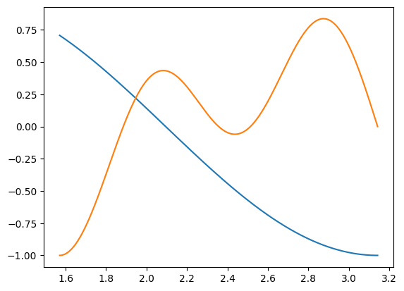

import numpy as np
import matplotlib.pyplot as plt 02wk-1: 퀴즈1

Warning
- 모든 문항은 부분점수 없음.
- 일부문항은 부분문제를 모두 맞출경우만 정답으로 인정함.
.ipynb파일 형태로 제출된 답안지만 채점하며 그 외의 형식 (.hwp등)은 채점하지 않음. 즉 0점 처리함. 제출방법 모르면 물어볼것!
Caution
- 전북대 학생들을 시험당일 학생증을 지참할 것. (출석체크 및 본인확인) 학생증 외에 신분증 여권등도 가능.
- 부정행위 (카카오톡 채팅을 통한 코드공유, 생성형모델 사용, 대리시험 등) 적발시 F 처리함.
- 퀴즈 중 지각할 경우 지각사실을 기록함. 하지만 별다른 감점은 하지 않음.
문제 1. – 10점
모두 맞출 경우만 정답으로 인정
(1) 아래와 같이 50개의 숫자를 나열한 배열 \({\bf x}=[x_1,x_2,\dots,x_n]\)을 상상하자.
x = np.array([0, 1, 1, 0, 1, 0, 1, 0, 0, 0, 1, 0, 0, 0, 0, 1, 0, 1, 0, 0, 0, 1,
0, 0, 0, 1, 0, 1, 1, 0, 1, 0, 1, 0, 0, 0, 0, 0, 0, 1, 0, 0, 1, 0,
0, 0, 0, 0, 1, 0])
xarray([0, 1, 1, 0, 1, 0, 1, 0, 0, 0, 1, 0, 0, 0, 0, 1, 0, 1, 0, 0, 0, 1,
0, 0, 0, 1, 0, 1, 1, 0, 1, 0, 1, 0, 0, 0, 0, 0, 0, 1, 0, 0, 1, 0,
0, 0, 0, 0, 1, 0])위와 같은 \(x_i\)에 대하여 \(0<p<1\)에서의 아래와 같은 함수 \(l(p)\)를 정의하라.
\[l(p)=\sum_{i=1}^nx_i \log p +\left(n-\sum_{i=1}^{n}x_i \right)\log(1-p)\]
파이썬을 이용하여 아래를 근사계산하라.
\[\lim_{h \to 0}\frac{l(0.32+h)-l(0.32)}{h}\]
(풀이)
l = lambda p: 16*np.log(p) + (50-16)*np.log(1-p)
h =0.000000001
(l(0.32+h)-l(0.32))/h3.5527136788005005e-06(2) \(0<p<1\)의 범위에서 \(l(p)\)를 최대로 만드는 \(p\)의 값을 구하라. 즉 \(\underset{p}{\operatorname{argmax}} l(p)\)를 구하라.
(풀이)
p = np.linspace(1/100,1,100)[:-1]
parray([0.01, 0.02, 0.03, 0.04, 0.05, 0.06, 0.07, 0.08, 0.09, 0.1 , 0.11,
0.12, 0.13, 0.14, 0.15, 0.16, 0.17, 0.18, 0.19, 0.2 , 0.21, 0.22,
0.23, 0.24, 0.25, 0.26, 0.27, 0.28, 0.29, 0.3 , 0.31, 0.32, 0.33,
0.34, 0.35, 0.36, 0.37, 0.38, 0.39, 0.4 , 0.41, 0.42, 0.43, 0.44,
0.45, 0.46, 0.47, 0.48, 0.49, 0.5 , 0.51, 0.52, 0.53, 0.54, 0.55,
0.56, 0.57, 0.58, 0.59, 0.6 , 0.61, 0.62, 0.63, 0.64, 0.65, 0.66,
0.67, 0.68, 0.69, 0.7 , 0.71, 0.72, 0.73, 0.74, 0.75, 0.76, 0.77,
0.78, 0.79, 0.8 , 0.81, 0.82, 0.83, 0.84, 0.85, 0.86, 0.87, 0.88,
0.89, 0.9 , 0.91, 0.92, 0.93, 0.94, 0.95, 0.96, 0.97, 0.98, 0.99])p[np.argmax(l(p))]0.32문제 2. – 10점
모두 맞출 경우만 정답으로 인정
길이가 100인 벡터 \({\bf x} = [x_0, x_1, \dots, x_{99}]\)를 아래와 같이 선언하라.
np.random.seed(43052)
x = np.random.randn(100)(1) \(x_0\)의 값은 얼마인가?
(풀이)
x[0]0.38342048800857303(2) \(x_{99}\)의 값은 얼마인가?
(풀이)
x[99]1.1870144262405193(3) \(\sum_{i=0}^{99} x_i\)의 값은 얼마인가?
(풀이)
np.sum(x)-8.136079223187856(4) \(\sum_{i=22}^{55} x_i\)의 값은 얼마인가?
(풀이)
np.sum(x[22:56])-1.1780743585314586문제 3. – 10점
길이가 100인 벡터 \({\bf x} = [x_0, x_1, \dots, x_{99}]\)를 아래와 같이 선언하라.
np.random.seed(43052)
x = np.random.randn(100)이 벡터에 대하여
- \(a=\sum_{i=0}^{24}x_i\)
- \(b=\sum_{i=25}^{49}x_i\)
- \(c=\sum_{i=50}^{74}x_i\)
- \(d=\sum_{i=75}^{99}x_i\)
의 값을 각각 조사하라. a,b,c,d 중 가장 큰 값은 무엇인가?
(풀이)
a = np.sum(x[:25])
b = np.sum(x[25:50])
c = np.sum(x[50:75])
d = np.sum(x[75:])a,b,c,d(-3.006728261055644,
0.3368136525904264,
-4.526860531092521,
-0.9393040836301192)문제 4. – 10점
모두 맞출 경우만 정답으로 인정
(1) lambda를 이용하여 \(f(x)=\sin(x)\)에 대응하는 함수를 선언하라.
(풀이)
lambda x: np.sin(x)<function __main__.<lambda>(x)>(2) def를 이용하여 \(g(x)=\cos(2x)\)에 대응하는 함수를 선언하라.
(풀이)
def g(x):
return np.cos(2*x)(3) 임의의 벡터 \({\bf x}=[x_0,\dots,x_{n-1}]\) 이 왔을때, \({\bf x}\)의 최대값을 \(x_{max}\) 라고 하고 최소값을 \(x_{min}\)이라고 하자. 예를들어
\[{\bf x} = [1,2,3,0]\]
의 경우 \(x_{max}=3\) 이고 \(x_{min}=0\) 이다. 벡터 \({\bf x}\)를 입력으로 하고 출력으로 \(x_{max}-x_{min}\)의 계산값을 리턴하는 함수를 구현하라.
(풀이)
f = lambda x: np.max(x) - np.min(x)f([1,2,3,0])3f([-1,2,4,10])11문제 5. – 10점
모두 맞출 경우만 정답으로 인정
아래의 코드를 실행하여 x를 생성하라.
np.random.seed(43052)
x = np.random.rand(4305)(1) 생성된 \(x_i\) 중 0.65와 가장 가까운 값을 출력하라.
(풀이)
x[np.argmin(np.abs(x-0.65))]0.6499741766686671(2) 생성된 값의 평균을 구하라.
hint \(\frac{1}{4305}\sum_{i=1}^{4305}x_i\)를 계산하면 된다. 아니면 np.mean() 함수를 이용해도된다.
(풀이)
np.sum(x)/4305, np.mean(x)(0.4965974918744432, 0.4965974918744432)(3) (2)에서 계산된 평균값과 가장 가까운 \(x_i\)값을 출력하라.
(풀이)
x[np.argmin(np.abs(x-np.mean(x)))]0.497315535600802문제 6. – 20점
\(\frac{\pi}{2}\leq x \leq \pi\) 에서 \(f(x)=\sin(\frac{3}{2}x)\) 와 \(g(x)=\cos(2x)\sin(5x)\) 의 교점의 좌표를 구하라.
근사값만구해도 정답으로 인정함
(풀이)
x = np.linspace(np.pi/2, np.pi,1000000)
f = lambda x: np.sin(3/2*x)
g = lambda x: np.cos(2*x)*np.sin(5*x)plt.plot(x,f(x))
plt.plot(x,g(x))
xx = x[np.argmin(np.abs(f(x)-g(x)))]
xx1.9462123119258816f(xx), g(xx)(0.2204484288597834, 0.2204457729878962)문제 7. – 30점
(1) 무한급수 \(\sum_{n=1}^{\infty}(\frac{1}{2})^n\) 의 수렴 및 발산을 파이썬을 이용하여 판정하라. – 10점
힌트
\(n=10, 20, 30, ..., 100\) 등에서 \(S_n=\sum_{k=1}^{n}a_k\)의 값을 조사해보고 수렴성을 판단하라.
(풀이)
n = np.linspace(1,100,100)
an = (1/2)**n
Sn = np.cumsum(an)Snarray([0.5 , 0.75 , 0.875 , 0.9375 , 0.96875 ,
0.984375 , 0.9921875 , 0.99609375, 0.99804688, 0.99902344,
0.99951172, 0.99975586, 0.99987793, 0.99993896, 0.99996948,
0.99998474, 0.99999237, 0.99999619, 0.99999809, 0.99999905,
0.99999952, 0.99999976, 0.99999988, 0.99999994, 0.99999997,
0.99999999, 0.99999999, 1. , 1. , 1. ,
1. , 1. , 1. , 1. , 1. ,
1. , 1. , 1. , 1. , 1. ,
1. , 1. , 1. , 1. , 1. ,
1. , 1. , 1. , 1. , 1. ,
1. , 1. , 1. , 1. , 1. ,
1. , 1. , 1. , 1. , 1. ,
1. , 1. , 1. , 1. , 1. ,
1. , 1. , 1. , 1. , 1. ,
1. , 1. , 1. , 1. , 1. ,
1. , 1. , 1. , 1. , 1. ,
1. , 1. , 1. , 1. , 1. ,
1. , 1. , 1. , 1. , 1. ,
1. , 1. , 1. , 1. , 1. ,
1. , 1. , 1. , 1. , 1. ])수렴한다
(2) 무한급수 \(\sum_{n=1}^{\infty}\frac{1}{n}\) 의 수렴 및 발산을 파이썬을 이용하여 판정하라. – 20점
힌트 – (1)번과 동일한 테크닉
(풀이)
n = np.linspace(1,100000000,100000000)
an = 1/n
Sn = np.cumsum(an)Snarray([ 1. , 1.5 , 1.83333333, ..., 18.99789639,
18.9978964 , 18.99789641])발산한다
성적분포
import pandas as pdpd.read_csv("2wk.csv")['2wk'].sort_values().to_numpy()array([ 0, 0, 0, 0, 0, 0, 0, 0, 0, 0, 0, 0, 0,
0, 0, 0, 10, 10, 10, 20, 20, 20, 20, 20, 30, 30,
30, 30, 40, 40, 40, 40, 40, 50, 50, 50, 50, 50, 50,
50, 60, 60, 60, 70, 70, 80, 80, 80, 90, 90, 100, 100,
100, 100, 100, 100])